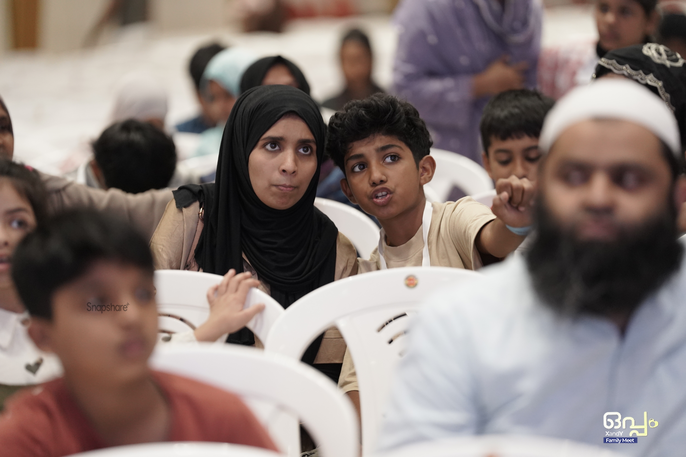
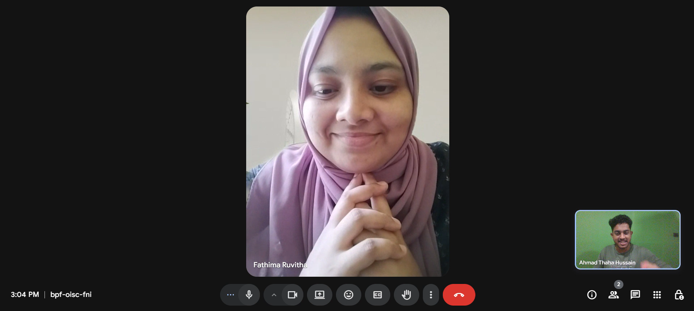
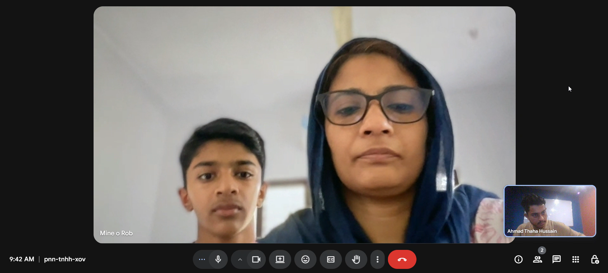
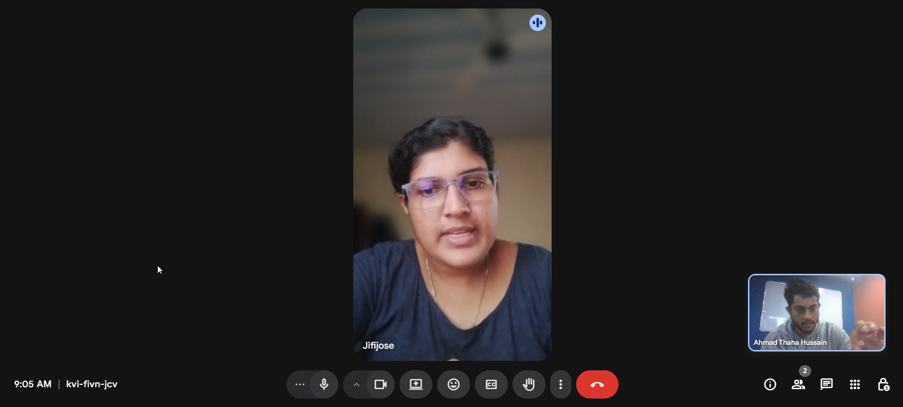
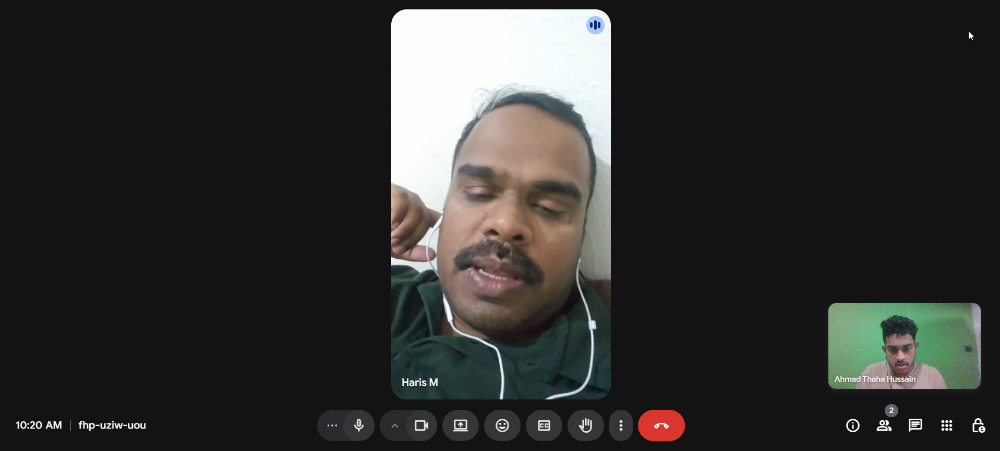
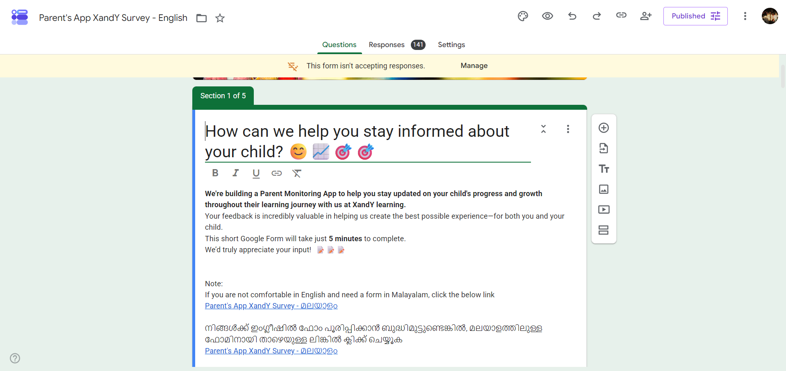
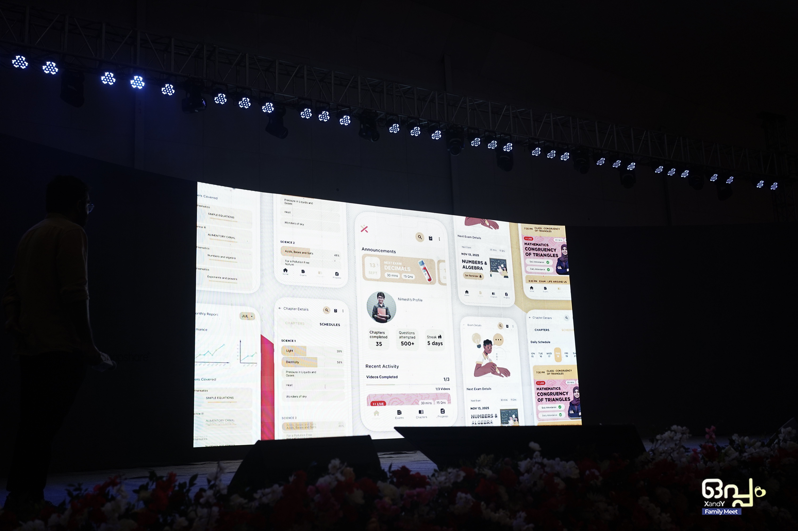
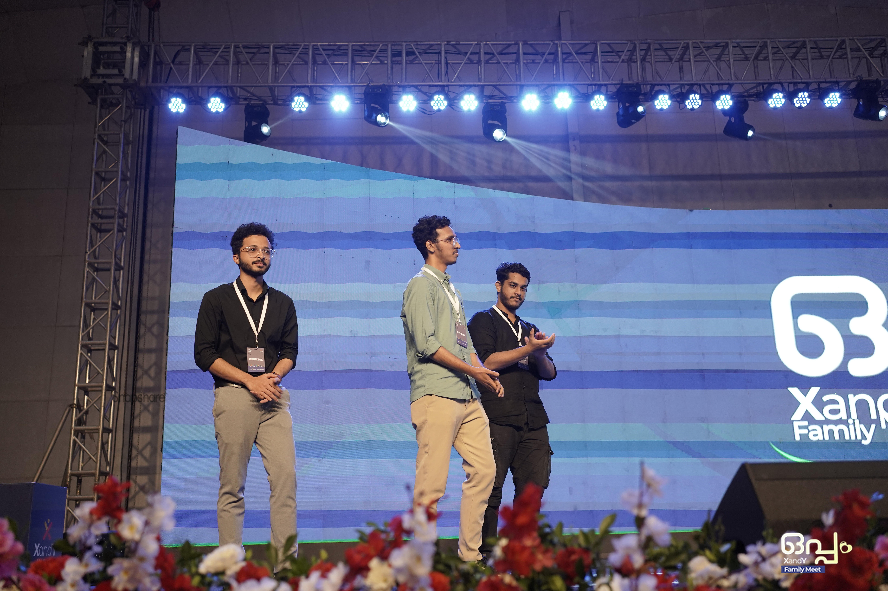
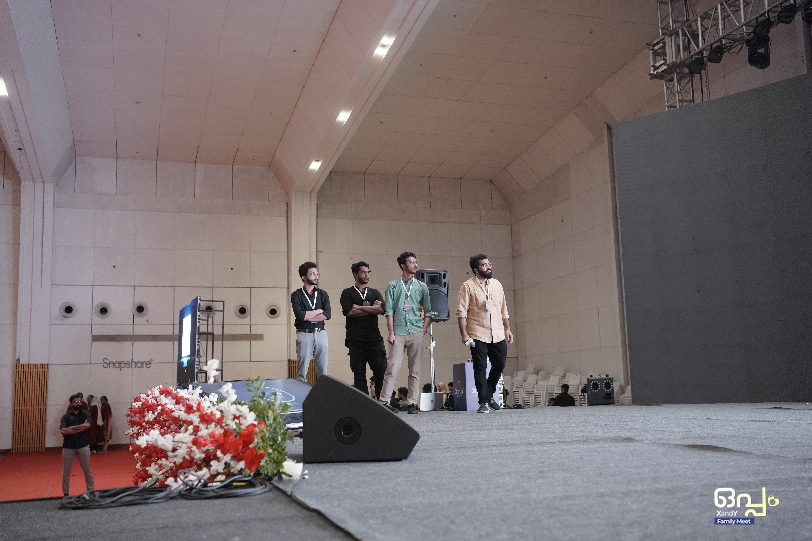

XANDY PARENT APP
*A app for parent to monitor their child's progress
Date: 2025
Stack Used: Figma, User Research, User Interviews


Unable to track progress
Parents had no dedicated way to regularly track their child’s academic progress. They mainly relied on monthly mentor calls or WhatsApp messages containing scores, attendance, and other updates, making important information easy to miss. Mentors, in turn, had to manually communicate updates and answer repeated questions.
Through conversations with parents and mentors, it became clear that parents weren’t looking for another complicated tool—they simply wanted a dependable way to know how their child was doing, whether they were attending classes, performing well, keeping up with chapters, and staying active.

Looking Past the Symptoms
I interviewed 7–10 mentors and 3–4 parents, supported by a survey with 90+ responses, to understand what parents actually needed. While secondary research helped explore how other products present progress and information, conversations with people at XandY revealed the real challenges.
WhatsApp updates were easy to miss, parents wanted visibility rather than control, and performance data needed to be presented carefully to avoid unhealthy comparisons. The key need was a dependable place where parents could easily understand their child’s schedule, performance, and learning activity without relying on messages or monthly mentor calls.





Analyzing the Research
The research pointed to a simple direction: parents shouldn’t have to dig for reassurance—the important information should come to them. I focused on two principles: keep it simple through clear navigation and easily understood information, and do no harm by presenting performance without over-emphasising comparison.
This shaped the experience around four core areas: Home, Exams, Chapters/Schedules, and Progress.
Features such as the activity heatmap, streaks, exam breakdowns, rankings with context, and upcoming exam countdowns were introduced to make progress, consistency, and important updates easier to understand at a glance.
From Wireframe to a System
I started by sketching the key user flows and screen structures on paper before moving into Figma. I used low-fidelity wireframes to test the hierarchy of information, navigation, and placement of key content without getting distracted by visual styling.
From there, I moved into high-fidelity designs and iterated through roughly 4–5 rounds, refining individual screens as the overall system took shape. I adapted XandY’s existing brand identity for digital, establishing light and dark themes, typography, colour, reusable components, and different component states.
I also designed key states such as active, urgent, empty, and subject-specific variations to make the system work beyond static screens. Throughout the process, I worked closely with the developer, documenting implementation details and reviewing the build to catch gaps between the design and the shipped product.



Product Launch
The XandY Parent App was soft-launched to parents during the Oppam Event in November 2025, followed by its release a few months later. Parents found the app comfortable and easy to use, with the features they needed to stay informed about their child’s progress. The product was designed to support 5,000+ parents and achieved a 4.6★ rating on the Google Play Store.
The XandY Parent App is launched on Google Play Store. Parents could now access their child's:
- Upcoming Exams and Schedules
- Exam Scores and Results
- Normal and Competitive Ranks
- Chapter Progress
- Daily Activity
- Streaks
- Performance Trends
- Fee and Account Information
The experience replaced a fragmented flow of WhatsApp screenshots and monthly mentor calls with a central place to understand the child's academic activity.
Thoughts After Shipment
This project taught me that research doesn’t always begin with a clear problem statement. Starting from a vague brief, I had to discover what the product actually needed through conversations with parents and mentors. Small insights, such as concerns around comparative rankings, became important design constraints that shaped the experience. I also learned that a design system doesn’t need to be large—a focused system built around the product was enough to maintain consistency and support different states. More than designing an app, the project was about discovering how it should work based on what parents actually needed.